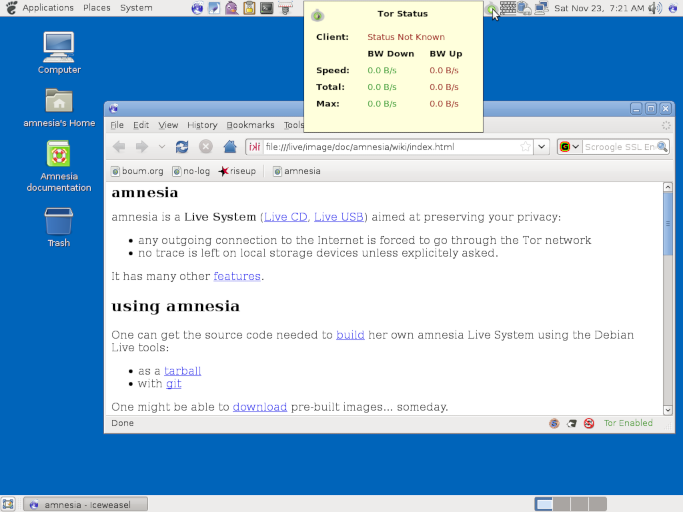
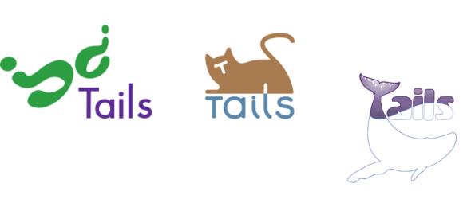
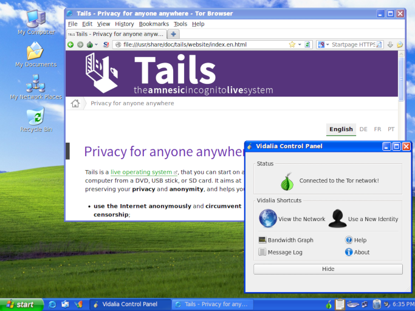
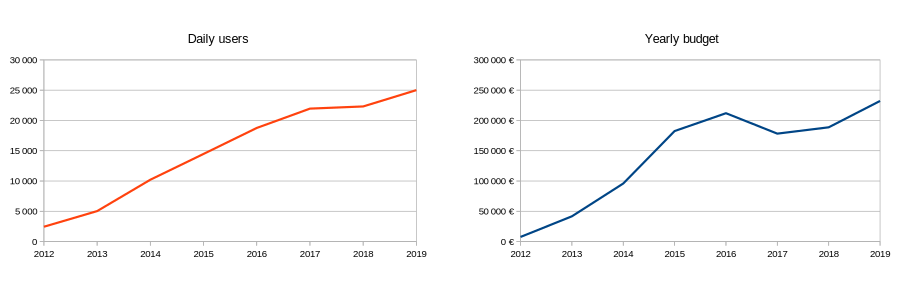

In 2019, we are especially proud of celebrating with you the 10 years of Tails.
The first release of Tails, back then amnesia, was announced in 2009. Since then we released 98 versions of Tails, which were used more than 40 million times.
Here are some stories about how it all started and some vintage screenshots. But first of all, the birthday cake!
_____
|_|_|_|
| . . |
|_____|
´ `
| |
| :-) |
{} {}
|| ||
_||_______||_
{} {~ ~ ~ ~ ~ ~ ~} {}
|| { ~ ~ ~ ~ ~ ~ } ||
__||__{_____________}__||__
{\/\/\/\/\/\/\/\/\/\/\/\/\/\}
{} { H a p p y \} {}
|| {\/\/\/\/\/\/\/\/\/\/\/\/\/\} ||
__||_{___________________________}_||__
{\/\/\/\/\/\/\/\/\/\/\/\/\/\/\/\/\/\/\/\}
{ B i r t h d a y }
{ ! ! ! T a i ls ! ! ! }
{/\/\/\/\/\/\/\/\/\/\/\/\/\/\/\/\/\/\/\/}
{_______________________________________}
2009–2010: amnesia, T(A)ILS, and their ancestors
Today, Tails is based on Debian, Tor, and GNOME. We inherit from their work and try to contribute back in order to create a healthy ecosystem of reliable, secure, and usable tools.
When we started the amnesia project back in 2009, other projects before us paved the way to what is Tails today:
Knoppix, born in 2000 and still alive today, was the first popular live Linux distribution. Back then, it was a groundbreaking achievement to be able to start and use Linux without going through lengthy, very complex, and uncertain Linux install "parties". Knoppix was primarily designed for convenience and diagnosis.
ELE, born in 2005 and based on Damn Small Linux, Anonym.OS, born in 2006 and based on OpenBSD, and Incognito, born in 2007 and based on Gentoo, pushed the concept of live operating systems a bit further by focusing on security, online anonymity, and the use of Tor.
Incognito was the first live operating system to include a full set of applications preconfigured to go through Tor (browser, email client, IRC client, etc.), offer a persistent Home directory, and even allow hosting onion services. Incognito was also the first live operating system to receive an official recognition from the Tor Project.
The original author of Incognito, Pat Double, resigned in 2007 and anonym, who still works for Tails today, took over the maintenance.
On August 16 2009, intrigeri announced the first release of amnesia on the tor-talk mailing list.
In March 2010, Incognito was declared dead and amnesia its "spiritual successor". Some weeks later, amnesia would be renamed T(A)ILS, The Amnesic Incognito Live System, to act the fusion between amnesia and Incognito.
We quickly realized that having parenthesis in our name looked very radical but was quite confusing and finally settled on Tails in 2011. Eight years later, we still see most people on the Internet write it TAILS though it's never been written in all caps on our website.
Hey people, it's Tails not TAILS!
This is how amnesia 0.2 and our website looked like in 2009. The browser was Iceweasel with Tor Button and the Tor controller was TorK.

2011-2014: core features, Tails 1.0, and public recognition
Until Tails 1.0 (April 2014), we would develop most of the core features that make Tails today:
- Tails Installer, forked from the Fedora Live USB Creator
- Persistence
- Welcome Screen
- Automatic upgades
- MAC Spoofing
- MAT (Metadata Anonymization Toolkit), which was developed by Julien Voisin as a Google Summer of Code with our help in 2011.
To support this intense development and the increased responsibility on our shoulders, we accepted our first grant, from the Swedish International Development Agency in 2011 and started paying for some of the development work.
In October 2012, Tails was started around 2 500 times a day, 10 times less than today.
In June 2013, Edward Snowden would reveal thousands of classified documents on the surveillance programs of the NSA. Tails got mentioned by famous technologists Bruce Schneier and Micah Lee as one of the tools that protect from the NSA surveillance.
In March 2014, we received our first award, the Access Innovation Prize for Endpoint Security. According to Access Now:
Tails embodies the successful collaboration of developers, trainers, security professionals towards tackling the spectrum of user needs -- from usability to security -- in high-risk environments.
The same month, we launched a logo contest. It was heartwarming to receive 36 very creative proposals. Here are some of the best ones:

In April 2014, Freedom of the Press Foundation launched the first crowdfunding campaign for Tails and revealed that Tails "has been critical to all of the main NSA journalists". Since then, Edward Snowden and journalists Laura Poitras, Glenn Greenwald, and Micah Lee have repeatedly stated the importance of Tails for their work and supported us in many ways.

 Images from Citizenfour by Laura Poitras, minutes 37 and 41.
Images from Citizenfour by Laura Poitras, minutes 37 and 41.
A few weeks later, the release of Tails 1.0 got press coverage on The Verge, CNET, Boing Boing, and many others. In December, Der Spiegel published internal NSA slides that categorize Tails as "catastrophic impact" and "highest priority":
This is how Tails 1.0 looked like in 2014. It had a camouflage mode that looked like Windows XP and the Tor controller was Vidalia.

2015-2019 - Maturity, user experience, and automation
In May 2014, the UX team at NUMA Paris invited us to organize a usability testing session of Tails with journalists. We asked participants to do slightly complex tasks such as establishing an encrypted conversation with someone else using Pidgin. Reality hit us hard when all the journalists in the room encountered problems to either install, start, or connect Tails to Tor. We realized that, despite having laid down most of the core features in Tails 1.0, we still had a lot of work to do to make Tails easy to use by most people.
Since then, we focused our work on 3 aspects of the project that don't bring in so many new features but rather ensure its long term sustainability and growth: user experience, continuous integration, and project sustainability.
User experience
Since these first usability tests in 2014, we systematically relied on user-centered design practices to ensure that all the major changes that we do in Tails are making it easier to use. We conducted 10 sessions of usability tests, used paper prototypes, conducted quantitative surveys, and defined better our audience using personas.

This usability work was key in all the work that we did since 2015 to make Tails easier to install:
- The installation instructions (2016) - The verification extension (2016) - The new Welcome Screen (2017) - The shift to USB images and Etcher (2019)
Continuous integration
To cope with this rapid development and the many releases, we built a cutting edge continuous integration infrastructure:
- Images of Tails are built automatically every time we develop a change for an upcoming release.
- These images are tested automatically against a comprehensive list of usability and security scenarios.
- All our images are reproducible, which allows security researchers to verify that the images distributed on our website have not been modified to introduce undisclosed security vulnerabilities.
The following video shows the test suite in action. On the left, it displays the scenario that is being tested, for example "symmetrically encrypting a message". On the right, it displays Tails being manipulated automatically according to the scenario.
This infrastructure increases the quality and reliability of our releases. It also makes it faster to publish emergency security releases when important vulnerabilities are fixed, for example in Firefox and Tor Browser.
Project sustainability
The combination of these efforts both on visible improvements and behind the scene had to go hand-in-hand with working on the sustainability of the project as an organization.
Since 2014:
- The number of Tails users was multiplied by 2.4, increasing by 20% each year on average, reaching 25000 daily users on average in 2019. Our yearly budget was multiplied by a similar amount, to reach 240 000€ (estimated) in 2019.
- We worked on foundational documents and processes to ensure a healthy community and project, such as our Code of Conduct, Social Contract, and Missions and values.

Sustainability cannot go without enjoying working together and having fun. We had memorable gatherings where we danced to the privacy-protecting sound of Rockwell — Somebody's Watching Me, Rap News — Whistleblower, Pete Seeger — The Onion Makes Us Strong (sic), The Police — Every Breath You Take, and Cyndi Lauper — Girls Just Want To Fix Bugs (sic), ate delicious vegan mafé from our beloved cooking team, and squashed an anarchist coup d'état.
In 2018 and 2019:
- 66 different people contributed to our main source code, including coders, writers, and translators.
- 22 different people were paid to work on Tails: a few of them full-time, most of them part-time or as consultants.
- We attended 21 conferences in 10 different countries to stay connected with the communities of the Tails ecosystem: related Free Software projects, digital security trainers, and users.
- 20 people, both workers and volunteers, attended our yearly gatherings.
Meanwhile, we counted no less than 21 projects, who also tried to build a live operating system for privacy and anonymity but are now abandoned.
A big thank you to everybody who either contributed to Tails or supported us:
- All the people mentioned in this article one way or another
- The people from other related Free Software projects that Tails relies upon
- The thousands of activists, journalists, and human-rights defenders who are using Tails everyday
- The digital security trainers and technologists who got excited about Tails in its early days and continue advocating for it today
- Everybody who ever contributed to our source code, including the dozens of translators
- Our sponsors and everybody who ever donated to Tails.
Thank you!